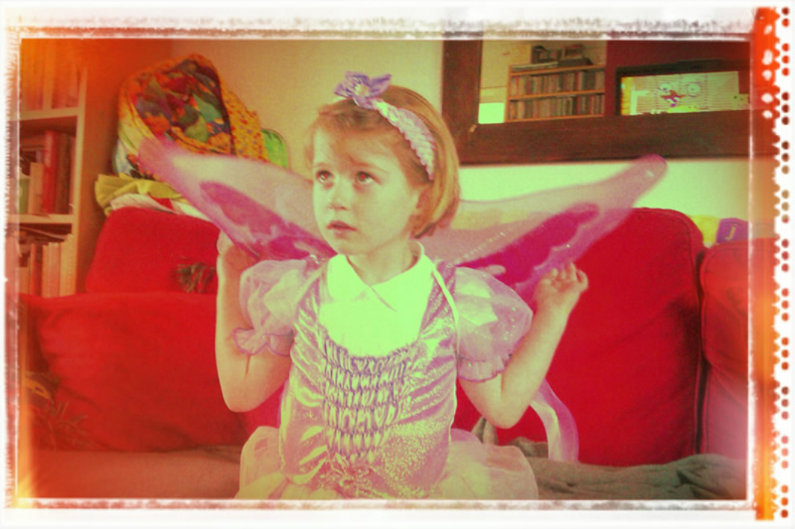

1、如何将图像显示在页面上？

2、替代文字
当图像地址拼写错误时，浏览器不会显示图像，而会显示替代文字
3、图片宽和高
4、图片的title
当鼠标放到图像上，就可以看到图片的title提示信息啦哦
5、图片和图像的注释
Hello I am the 注释 of the image ^_^
6、音频和视频在网络上
7、播放音频
8、嵌入字幕
9、嵌入其他页面
这将嵌入百度首页页面
10、IFrame的漏洞处理： 配置CSP指令
1、你应该使用sandbox没有参数的属性来强制执行所有可用的限制
2、CSP代表【内容安全策略】，并提供了一组HTTP标头（由Web服务器发送时与元数据一起发送的元素据），旨在提高HTML文档的安全性。在保护
<iframe>时，你可以将服务器配置为发送适当的标题。这可以防止其他网站在其网页中嵌入你的内容，正如我们之前看到的那样，MDN开发人员正在做什么。
< meta http-equiv="Content-Security-Policy" content="default-src 'self'"<
11、Embed 嵌入
12、Object 嵌入
13、向Web中嵌入SVG
此图为导入的SVG文件

14、响应图像进行适配

15、Picture元素实现：响应图像进行适配
16、Mozilla启动页面
17、JavaScript动态添加对象
18、动态控制超链接跳转
跳转到百度首页。。。。